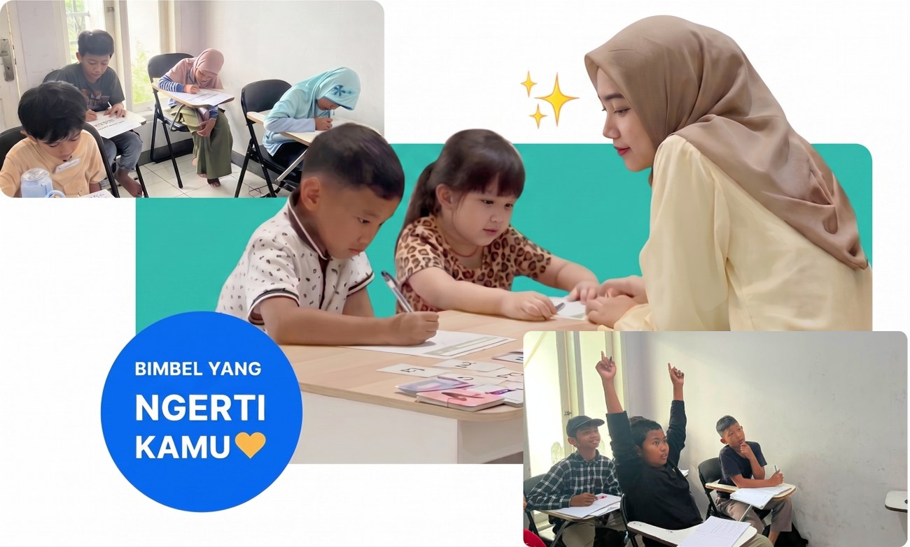
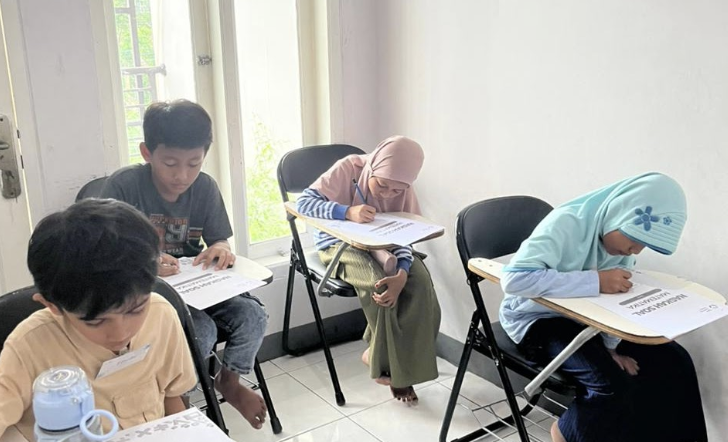
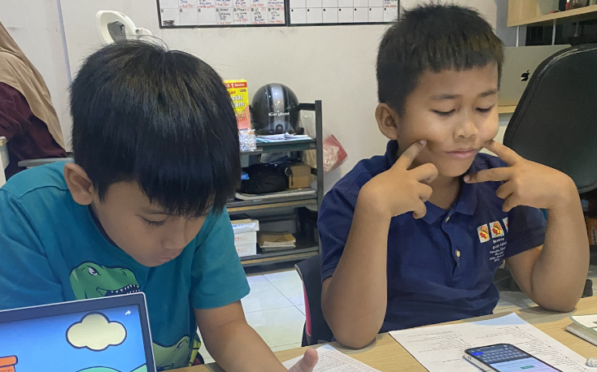
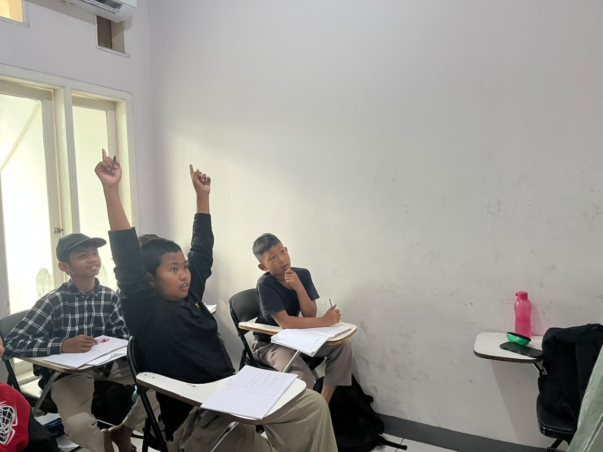
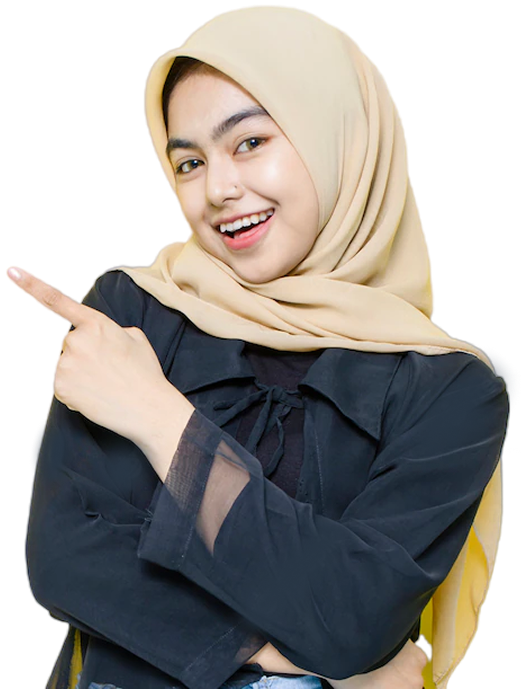

Ceritakan kebutuhan anak Anda, kami bantu cari pendekatan yang pas.

Anak belajar materi yang sama dengan sekolahnya, supaya nggak ketinggalan. Tapi kalau ada bagian yang masih lemah, kami kasih tugas tambahan dan terus dipantau, bukan dibiarkan menumpuk sampai kelihatan saat ujian.
Bukan disuruh kerja sambil bingung. Tutor jelasin dulu sampai anak benar-benar paham, baru lanjut ke latihan soal yang lebih banyak.
Itu bagian dari cara belajarnya. Anak boleh coba, boleh salah, dan dibantu mencari tahu di mana letak salahnya, bukan langsung disalahkan.

FOTO: A.K. bersama tutor, atau momen lomba/sertifikat (kalau ada)

FOTO: R.F. saat simulasi try out UTBK dengan waktu nyata

"Otak M.H.A. ngebut, tapi tangannya mengerem — masih hitung pakai jari, padahal logikanya sudah kuat."
Anak saya tadinya males banget kalau diajak ngomongin matematika. Sekarang malah dia yang cerita duluan kalau dapet nilai bagus di ulangan. Itu yang bikin saya yakin caranya memang beda.
Yang saya suka, tutornya kasih tau persis di bagian mana anak saya sering salah — bukan cuma bilang "kurang latihan". Jadi saya juga jadi ngerti harus bantu apa di rumah.
Awalnya saya ragu karena Tera masih baru. Tapi setelah lihat cara tutornya jelasin progres anak saya tiap bulan, dengan detail bukan cuma angka, saya jadi tenang.
Anak saya yang tadinya takut sama matematika sekarang malah minta belajar lebih sering. Katanya gurunya nggak pernah marah kalau dia salah, malah dibantu cari tahu kenapa salahnya.
Membenarkan konsep dasar yang membuat nilai sering stuck.
Latihan terarah sesuai kisi-kisi TKA terbaru.
Pendalaman materi UTBK dengan simulasi try out nyata.
Belajar bersama dalam kelompok kecil, konsep dasar tetap jadi fokus.
Penguatan baca, tulis, dan hitung dari dasar.
Satu tutor, satu anak, sepanjang sesi belajar.
Tes Fondasi adalah pemetaan awal sebelum anak mulai program apa pun di Tera — mengukur 4 pilar (Konsep, Logika, Literasi, Kecepatan) supaya kami tahu persis bagian mana yang perlu dibenahi duluan, bukan menebak dari nilai ulangan saja.
Bisa. Justru anak yang sudah les tapi nilainya belum naik biasanya punya bolong di konsep dasar yang belum sempat dibenahi. Tes Fondasi di awal akan menunjukkan persis di bagian mana itu.
Berbeda-beda tiap anak, tergantung titik awal dan konsistensi belajarnya. Biasanya perubahan pertama mulai terasa di bulan ke-2 atau ke-3 — bukan instan, tapi kami pantau progresnya tiap pertemuan supaya tahu kalau ada yang perlu disesuaikan.
Untuk kelas reguler (Fondasi, Juara, Calistung), jadwal mengikuti kelompok jadi reschedule terbatas. Untuk Kelas Privat, jadwal bisa diatur ulang sesuai kesepakatan dengan tutor.
Bisa. Kami kirim laporan perkembangan secara berkala — bukan cuma angka, tapi juga catatan tutor soal bagian mana yang sudah kuat dan mana yang masih perlu dilatih.
